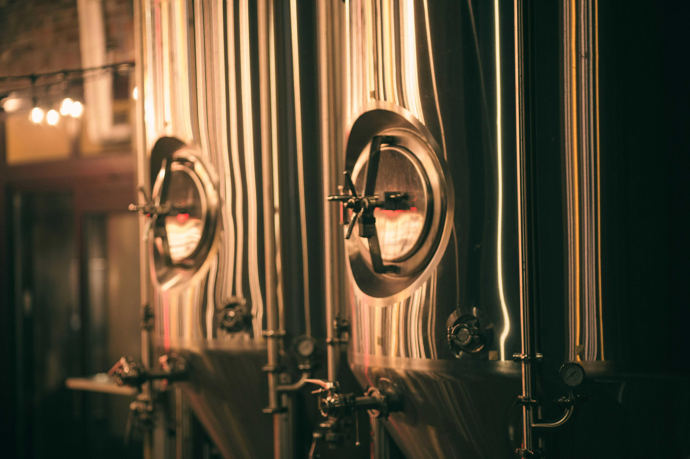
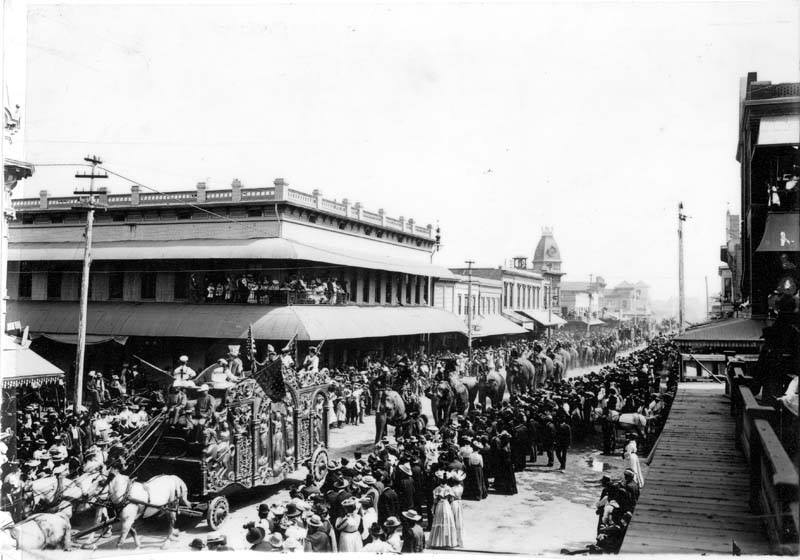
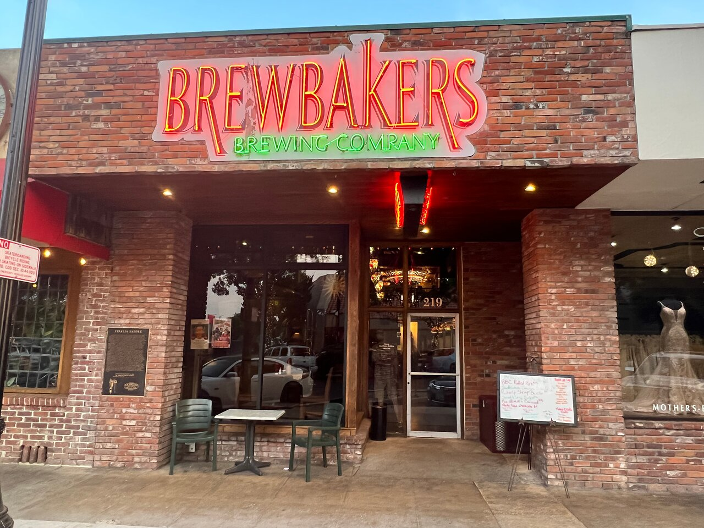

About Brewbakers
We are Brewbakers Brewing Company, Visalia's original brewing company. We've been brewing savory beer and preparing delicious meals for Visalia since 1999. We are located in the heart of Visalia on Main Street, and our brewpub occupies the site where Visalia's first beer gardens once stood in the early 1900s.
Our History
1889 – Ringling Brothers Circus
The Ringling Brothers circus parade is going down Main Street in front of our building.

1906 – Main Street Flood
Main Street looks west at the intersection of Main and Garden Street.
1936 – The Brewery Location
Our location used to have four 60-foot palm trees growing from the center of the building. Many tavern and restaurant owners have set up shops at this location in the past. At one time, our location was home to Visalia's original beer garden, where, to this day, local craft beer is still served.
Brewbakers Makes History
1999 – Start Demo for New Brewery
Nearly 100 years after the Ringling Brothers circus came to town, Brewbakers Brewing Company started constructing its new brewery. During construction, archaeologists found artifacts in this location, indicating that locals from the area came here to enjoy good spirits.
2025 – Present Day
At the heart of a growing city, Brewbakers Brewing Company is still serving savory brewpub classics, delicious hand-crafted brew, refreshing seltzers and good spirits.
